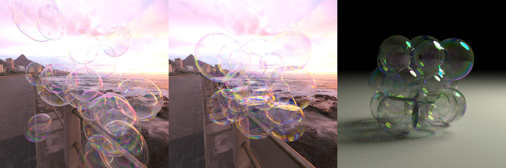
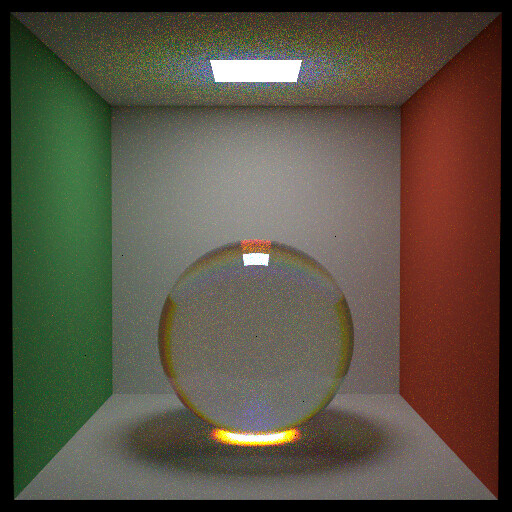
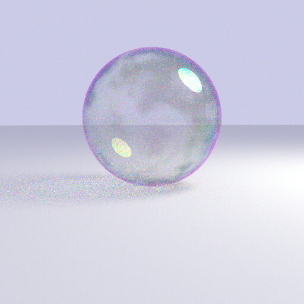
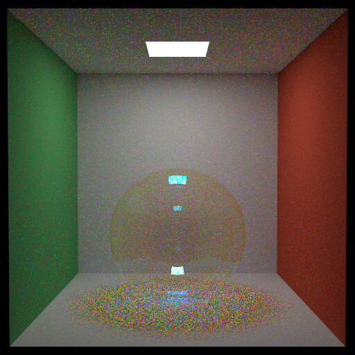
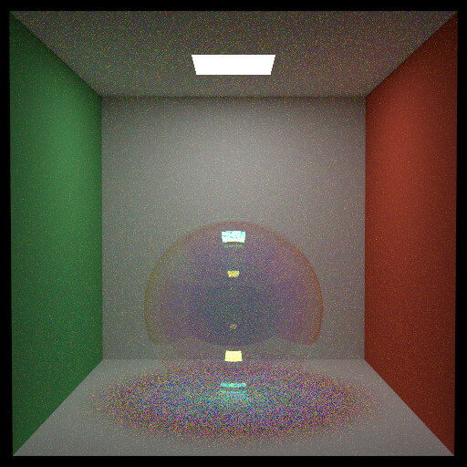
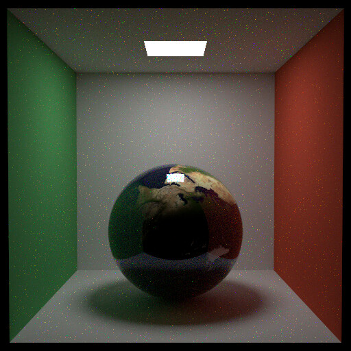
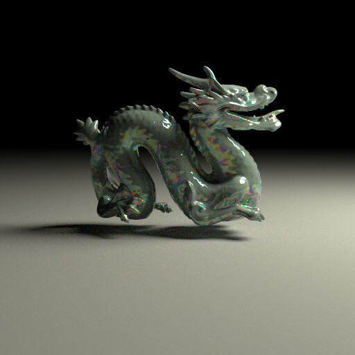

This project renders soap bubbles by adding two features to DIRT, the ray tracer used in the course. A soap bubble gets its color from thin-film interference, which depends on wavelength and film thickness, and an RGB renderer does not track wavelength. Here each ray carries four stratified wavelengths with hero wavelength sampling. After a dispersive bounce only the hero wavelength continues. The iridescent colors come out of the simulation without any hand-tuned color mapping.

The spectral tracer was tested on a dispersive glass sphere whose index of refraction follows the Cauchy formula. A thin-film material was then added, using the Airy reflectance for each polarization. With a uniform thickness over the sphere, the 200 nm film reflects shorter wavelengths and the 400 nm film reflects longer ones. The thickness can also be read from a texture. A marble texture mapped to 150 to 700 nm gives an uneven film.




A bubble is a thin shell with two interfaces, and a single surface cannot model the light bouncing between them. The multilayered BSDF follows the position-free Monte Carlo framework of Guo et al., which traces paths through a stack of flat layers inside the BSDF.


The spectral tracer costs about four times as much as an RGB tracer, and the unidirectional tracer struggles with caustics from refraction through the bubble. The next step would be the bidirectional estimator of Guo et al. inside the layer stack, combined with bidirectional path tracing at scene level.